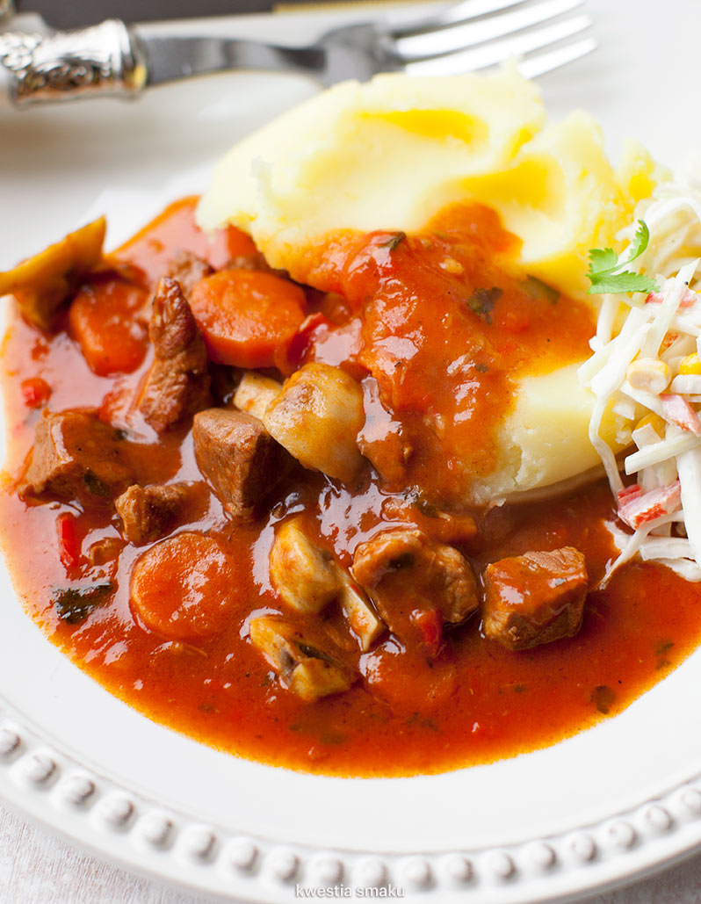

Gulasz

Description
Jednogarnkowe danie miesa, papryki, marchewki i pieczarek
Ingredients
- 1 duża cebula
- 1 kg łopatki wieprzowej
- 1 łyżeczka mielonej ostrej papryki
- ok. 1 l gorącego bulionu lub rosołu
- 2 średnie marchewki
Steps
- Mięso pokroić w kostkę ok. 1,5 cm. Boczek pokroić w małą kostkę. Cebulę obrać i pokroić w kosteczkę. Marchewkę obrać i pokroić na plasterki. Paprykę pokroić w kostkę.
- W szerokim garnku rozgrzać łyżkę oliwy, dodać boczek i cebulę, zeszklić ją. Dodać drugą łyżkę oliwy, włożyć marchewkę i paprykę i mieszając podsmażać wszystko przez kilka minut.
- W międzyczasie na oddzielnej patelni rozgrzać smalec (lub oliwę) i obsmażyć kawałki mięsa. Doprawić je solą i pieprzem i przenieść do garnka z warzywami. Jeśli mamy można całość podlać ok. 1/3 szklanki wina (czerwonego lub białego) i na większym ogniu chwilę odparować.